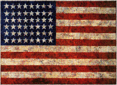
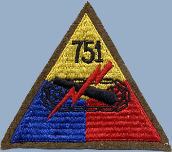

John Ellard King — The Eldest Brother

Eli King
Eli King was born John Ellard King on January 16th, 1918 in Rock Castle County, Kentucky. He was the eldest of the three King brothers and was, by all accounts, an extraordinary gentleman.
He was inducted into the U.S. Army on December 1st, 1941 — just six days before the attack on Pearl Harbor. He would serve as a liaison officer and tank commander for the 751st Tank Battalion, one of the most decorated independent tank battalions of World War II.
The 751st Tank Battalion — North Africa & Italy
{kind=link}

751st Tank Battalion
Eli fought in North Africa in the Tunisian Campaign of 1943, and in Italy he fought in the Naples-Foggia Campaign of 1943–1944 and the Rome-Arno Campaign of 1944. For his heroism in combat, he received three Bronze Stars.
| Campaign | Theater | Year |
|---|---|---|
| Tunisian Campaign | North Africa | 1943 |
| Naples-Foggia Campaign | Italy | 1943–1944 |
| Rome-Arno Campaign | Italy | 1944 |

Eli (right) and friend Bob Knodel (left), training at Fort Jackson, South Carolina, April 1942.
Standing in front of an M3 General Lee tank, predecessor of the M4 Sherman.
{kind=link}

751st Tank Battalion
A Battle Near Velletri
Eli unfortunately lost his leg in a panzerschreck attack on his tank in a battle near Velletri, Italy in May of 1944. He was honorably discharged from the Army at the rank of Sergeant in December, 1944.

September 1943. From left to right: Smokey Blanton, Eli King, Bill Laney, and Bob Knodel. All were from Hamilton, Ohio.
Smokey Blanton, Eli, and Bob Knodel were all tank commanders. Bill Laney was a tank driver for Bob Knodel. Bob Knodel's tank was caught in an artillery barrage at Anzio — Bill Laney was killed and Bob Knodel was seriously injured.
Home to Hamilton — A Life Well Lived
Eli returned home to Hamilton, Ohio and rejoined his younger brothers, Charles and Buck, in King Brothers Trucking and later in King Sales and Service, their International truck dealership. He was also involved in the horses of the Ohio Valley Stables.
Eli King recently passed away at his home in Hamilton, Ohio on June 25th, 2011 at the age of 93. He will be greatly missed, and we continue to honor his memory and his service to his country through this page.
History of the 751st Tank Battalion →